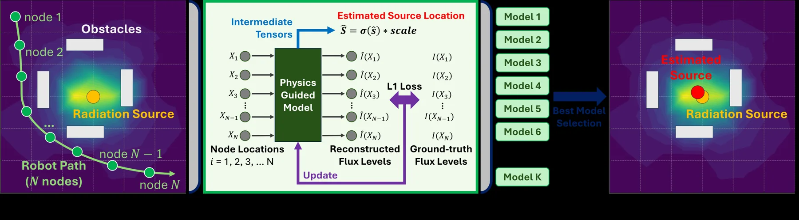
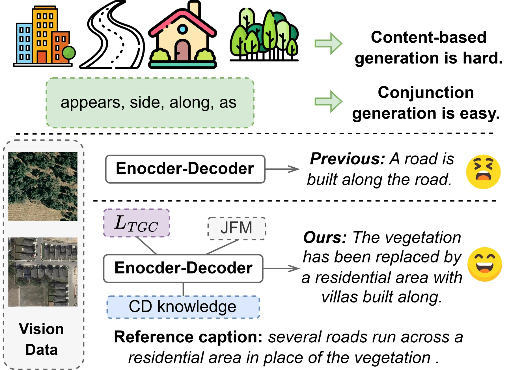

论文预览
新论文 · 日期 2026-06-29 · score 10.0 · cs.CV
作者：Jingfeng Mao, Xuyang Chen, Qilin Zhang, Oussema Dhaouadi, Guangming Wang, Brian Sheil, Daniel Cremers, Yan Xia, Olaf Wysocki
评分 10/10
航拍定位6DoF语义城市模型GNSS 受限城市峡谷UAV
一句话工作总结：用标准化语义 3D 城市模型替代重纹理重建，为 GNSS 受限城市峡谷中的 UAV 6DoF 定位提供了可扩展约束。
航拍 6DoF 定位通常依赖高精度 GNSS 或带纹理的高保真 3D 重建，因而在城市峡谷、遮挡和大规模部署中受限。SemCityLoc 将航拍位姿估计表述为语义-几何表面对齐：把基础模型提取的视觉语义先验和单目深度，与符合 LoD 标准的轻量级语义 3D 建筑模型配准。作者还发布 SemCityLockeD 基准，包含厘米级 UAV 真值位姿、LoD1–LoD3 城市模型和低空影像。实验显示，在挑战性城市峡谷中，…
Aerial 6DoF localization typically relies on precise GNSS signals or radiometrically rich 3D reconstructions, limiting scalability and on-board deployment. We propose SemCityLoc, a semantic-geometric alignment…

新论文 · 日期 2026-06-29 · score 9.5 · cs.CV, cs.GR
作者：Xin Wang, Wendi Zhang, Hong Xie, Haibin Ai, Qiangqiang Yuan, Zongqian Zhan
评分 9.5/10
3DGS正射影像城市重建数字孪生摄影测量GIS
一句话工作总结：把 3DGS 改造成面向大范围城市正射产品的生成管线，是三维重建、遥感制图和数字孪生之间很值得跟踪的交叉工作。
真数字正射影像（TDOM）是数字孪生和 GIS 的重要产品，但传统摄影测量流程依赖 DSM、遮挡检测和复杂人工处理，在弱纹理、反光表面和建筑边界处容易退化。TOrtho-Gaussian 将 3D Gaussian Splatting 引入正射影像生成，通过各向异性高斯核的正交 splatting 直接生成 2D 正射视图，避免显式 DSM 和遮挡检测；同时采用分治策略支持大范围城市区域训练与渲染，并用全各向异性高…
True Digital Orthophoto Maps (TDOMs) are essential products for digital twins and Geographic Information Systems (GIS). Traditionally, TDOM generation involves a complex set of traditional photogrammetric proc…
新论文 · 日期 2026-06-29 · score 8.5 · cs.CV, cs.AI, cs.GR
作者：Jiaxin Li, Yuxiang Wu, Zhenkai Zhang, Xinrui Shi, Haoyuan Wang, Yichen Zhao, Su Linxiang, Chenyang Yu, Mingyu Zhang, Yifan Ding, Boran Wen, Li Zhang, Ruiyang Liu, Yong-Lu Li
评分 8.5/10
单目视频4D重建多物体交互VLM具身智能动态场景
一句话工作总结：面向单目视频的 4D 多物体交互重建数据引擎，可作为机器人/具身学习中低成本获取动态 3D 资产的候选路线。
从海量野外单目视频中恢复动态 4D 物体交互，可为具身智能和 VLA 训练提供可扩展数据，但现有单目 4D 重建常聚焦孤立物体，在多物体遮挡和复杂交互中失败。HAT-4D 是一个 agentic 框架，结合 VLM 与多层级 human-in-the-loop 反馈，在 3D 生成和 4D 传播阶段处理深度歧义、遮挡和交互约束，从单视频恢复多物体几何、时间动态和物理交互。作者还构建 MVOIK-4D 开放世界基准，…
Extracting dynamic 4D object interactions from massive, in-the-wild monocular videos offers a highly efficient data collection pathway for scaling Embodied AI and training VLAs. However, existing monocular 4D…
新论文 · 日期 2026-06-29 · score 8.0 · cs.GR
作者：Yang Zhou, Songyin Wu, Lingqi Yan
评分 8/10
3D Gaussian场景表示可微渲染全局光照Radiance Field图形学
一句话工作总结：从渲染理论层面扩展 Gaussian primitive，有助于观察 3DGS 从快速新视角合成走向更统一、物理一致场景表示的趋势。
作者提出一种通用 3D Gaussian 分布渲染基元，试图统一硬表面、高频细节、毛发/雾等模糊介质与全局光照。方法基于非指数传输推导与 Monte Carlo 路径追踪兼容的渲染操作，可从 mesh 和 3D Gaussian Splatting 转换，并通过可微的透射率优化继续细化。论文展示了全局光照、外观编辑以及辐射场重建/渲染等应用，强调在多种场景表示之间的转换与统一。
Searching for a unified scene representation remains a research challenge in computer graphics. Traditional mesh-based representations are unsuitable for dense, fuzzy elements and introduce additional complexi…

新论文 · 日期 2026-06-29 · score 7.5 · cs.CV, cs.AI, cs.GR, eess.IV
作者：Jingjun Sun, Chaowei Wang, Zhirui Liu, Jiaxu Tian, Ming Yang, Yaoxing Wang, Shan Gao
评分 7.5/10
3D场景图视角鲁棒语义地图空间关系具身智能
一句话工作总结：该工作不做几何配准，但对机器人在不同视角下构建一致 3D 语义/关系地图有参考价值。
3D 场景图生成将场景组织为物体-关系-物体图，但同一 3D 场景在不同 yaw 视角下，关系谓词的变换行为并不一致：left/front/right/behind 等方向关系应随观察坐标变换，而支撑、接触、附着等关系应保持稳定。TAD 将关系推理分为视角稳定分支和方向变换分支，并用变换描述子、分组辅助监督和稳定物体表示提升在 yaw 改变下的鲁棒性。3DSSG 实验表明，在不依赖训练时旋转增强的条件下，TAD 在…
3D Scene Graph Generation (3DSGG) represents 3D scenes as structured object-relation-object graphs, providing a compact relational abstraction for spatial understanding. In embodied intelligence settings, the…

新论文 · 日期 2026-06-29 · score 7.0 · cs.RO
作者：Shiang-Feng Tsai, Jin-Cheng Jhang, Yen-Ling Tai, Jia-Hong Lai, Shih-Yun Wong, KangTung-Hsu, Yi-Ting Chen
评分 7/10
机器人操作3D groundingVLA空间泛化动作头注入
一句话工作总结：用显式 3D 几何 grounding 改善机器人策略泛化，说明 VLA 控制仍强依赖稳定空间坐标表达。
视觉-语言-动作模型在测试时常因物体位置变化或指令变化而失效。作者认为关键不只是提供 2D/视觉/语言提示，而是如何表示并注入 grounding 信号：将目标提升为 3D 点，计算其相对夹爪位移，再通过自适应层归一化直接注入动作头。该模块仅为两层 MLP，不修改 VLA 主干或预训练流程。在 LIBERO-PRO 上，该方法显著提升 GR00T-N1.6 和 π0.5 在任务扰动、位置扰动下的成功率。
Vision-Language-Action (VLA) models leverage large-scale vision-language pretraining for flexible robot manipulation, yet at test time they remain brittle along two axes: spatial generalization, when object po…

新论文 · 日期 2026-06-29 · score 6.8 · cs.RO, cs.AI
作者：Sirui Chen, Shibo Zhao, Zhen Wu, Jiaman Li, Guanya Shi, C. Karen Liu
评分 6.8/10
人形机器人场景交互接触建模强化学习运动跟踪
一句话工作总结：通过重建场景-交互图和接触标签训练人形策略，对将三维场景理解用于机器人控制有参考意义。
现有人形强化学习策略擅长自由空间运动，却难以处理与物体、地形的接触交互。SceneBot 在单一策略中同时条件化参考动作和每个连杆的接触标签，让策略显式知道预期环境交互。为弥补带标注交互数据不足，作者提出 hindsight scene reconstruction，从重定向人体运动中推断场景-交互图，并用约 7.5 小时接触丰富数据训练。实验显示，SceneBot 可泛化到未见动作和环境，完成搬箱上楼等长时程接触…
Current humanoid reinforcement-learning policies excel at free-space motions but struggle with contact-rich tasks, as pure kinematic tracking cannot resolve the physical ambiguities of interacting with objects…
新论文 · 日期 2026-06-29 · score 6.5 · cs.RO, cs.LG
作者：Raymond Yu, William Huey, Mustafa Mukadam, Anusha Nagabandi, Abhishek Gupta
评分 6.5/10
Sim-to-Real机器人学习强化学习策略改进真实数据约束
一句话工作总结：在真实数据支持集内做仿真策略改进，是减少 sim-to-real 风险的一种实用约束思路。
用真实数据训练的机器人策略常不精确、慢且抗扰差；直接在真实世界用 RL 改进成本高，而无约束仿真 RL 又可能利用仿真-真实差异。SCORE 提出 real-to-sim-to-real 策略改进框架：在仿真中优化策略，但通过 flow steering 将动作限制在由真实数据预训练生成策略的支持集内，从而避免越过可迁移行为边界。八个真实多指灵巧操作任务中，平均成功率从 37.8% 提升到 89.9%，优于基线。
Robots trained on real world data tend to be imprecise, slow, and brittle to perturbations. Improving these policies with reinforcement learning (RL) is an appealing alternative, but this process often require…

新论文 · 日期 2026-06-29 · score 6.2 · cs.RO, cs.LG
作者：Hojoon Son, Kai Tan, Fan Zhang
评分 6.2/10
机器人定位物理信息学习源定位未知环境在线学习
一句话工作总结：虽是辐射感知场景，但它关注任意轨迹下的源定位和未知障碍衰减建模，可类比到稀疏传感定位问题。
机器人辐射源定位常通过规划路径靠近辐射源以提高精度，但这会增加硬件受损风险，也限制任务灵活性。该工作提出物理信息机器学习框架，在未知环境和任意测量路径下估计辐射源位置。方法设计物理启发张量来处理未知障碍造成的衰减伽马通量，并并行计算多个模型以提升鲁棒性和精度。作者在 Monte Carlo 粒子输运仿真、多种随机环境和实体实验中验证，并在真实机器人部署中使用持续学习提升在线适应性。
Using robots to estimate the location of the radiation source is an effective way to improve efficiency and safety. Existing methods focus on planning the robot's path to achieve precise estimation, typically…

新论文 · 日期 2026-06-29 · score 5.8 · eess.IV, cs.LG
作者：Yelin Wang, Zijia Song, Chuanguang Yang, Miaoyu Wang, Zhulin An, Libo Huang, Yongjun Xu
评分 5.8/10
遥感变化检测变化描述多时相影像地图更新
一句话工作总结：该工作偏遥感语义变化理解，可作为城市级地图更新、变化检测到文本解释链路的参考。
遥感图像变化描述需要为不同时相影像之间的变化生成文字说明。现有方法多依赖单一自回归生成，容易学习常见词而忽视真正有判别力的图像差异。DFM 重构训练范式，引入文本引导门控对比损失，从文本模态视角引导视觉编码器提取关键变化；同时迁移预训练变化检测模型的稳定知识，并设计联合特征建模模块融合多尺度差异表示。多数据集实验验证了该方法的有效性。
The primary goal of Remote Sensing Image Change Captioning (RSICC) is to automatically generate descriptions of changes between remote sensing images captured at different time points. Existing models still re…